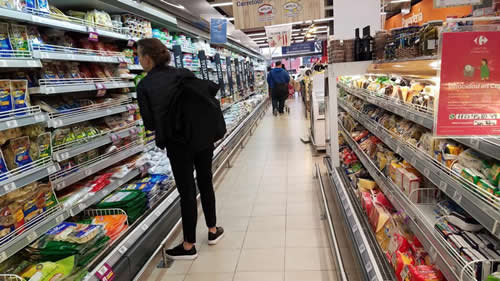

Real Chubut - Agencia de Noticias


Los escenarios para una eventual reestructuración de deuda

La economía macrista termina en default y bancos internacionales empezaron a evaluar qué tipo de negociación se abrirá con Argentina. Analizan magnitud de la quita de capital, extensión de plazos y cuál será la tasa de interés.
El endeudamiento vertiginoso del gobierno de Mauricio Macri arrojó nuevamente a la economía argentina a una escenario de reestructuración de bonos. El ministro de Hacienda, Hernán Lacunza, la presentó como una operación de "reperfilamiento" de la deuda. Pero en el mercado no dudan que habrá una refinanciación global de la deuda argentina. Este tipo de negociación con los acreedores no será sencilla porque es un juego de suma cero: lo que el país disminuya en pagos de intereses y capital es equivalente a lo que los inversores dejarán de cobrar.
La salida a esta nueva crisis de la deuda es una incógnita y puede ser más o menos amistosa con el mercado. Para tener algunas pistas vale repasar entonces lo qué pasó en las últimas diez reestructuraciones en el mundo. Una primera forma de clasificarlas es si se hicieron con quita efectiva del capital e intereses o simplemente se extendieron los plazos de repago, que significa una quita implícita para los inversores por el costo de oportunidad.
En las últimas 10 reestructuraciones, 6 de cada 10 países negociaron una quita. Ordenando la lista en forma cronológica la primera que aparece es la de Argentina en 2005. Le siguen Iraq (2006), Ecuador (2009), Costa de Marfil (2010), Grecia (2012) y Ucrania (2015).
Este listado fue preparado por economistas del fondo de inversión británico Schroders para una presentación a sus clientes a puertas cerradas sobre la situación financiera de la economía argentina. Entre los 4 países que no recortaron capital se destaca la negociación de Uruguay en 2003.
En ese momento la deuda uruguaya representaba el 112 por ciento de su PIB. La negociación con los acreedores incluyó el aplazamiento de los pagos por cinco años y la oferta alcanzó una aceptación del 93 por ciento. El capital e intereses de la deuda se pagaron normalmente en el período que duró la negociación.
La contracara de esta salida menos traumática para los inversores fue el default de la Argentina en 2002 y el canje de la deuda iniciado en 2005. Se estiraron los plazos para el repago de la deuda hasta 30 años y hubo una quita directa del capital.
Al respecto, existen distintas formas de computar el recorte aplicado.Los investigadores Juan Cruces y Chirstoph Trebesch explican la forma en la que puede medirse una quita: se calcula el valor presente de la deuda reestructurada y se lo divide por el monto nominal de la deuda original. Este es el criterio que se usa en el mercado y en la prensa financiera para resumir el resultado de una reestructuración.
La cifra de la quita que calcularon Cruces y Trebesch para Argentina 2005 es 78 por ciento y la de Uruguay 2003 es 9 por ciento., En este último caso no hubo un recorte del capital directo sino una quita implícita por la extensión del plazo de pagos.
Estos dos investigadores hicieron una recopilación desde 1970 de procesos de cesasión de pagos y renegociación con los acreedores. Estudiaron 187 eventos de reestructuración en los que el promedio simple del recorte de deuda fue del 40 por ciento.
La negociación amistosa de los uruguayos o la firmeza del canje argentino no son los únicos antecedentes de reestructuraciones en los últimos años. Existe un caso intermedio: Ucrania en 2015.
Ese país alargó cuatro años los plazos de repago de la deuda y realizó un recorte de capital de 20 por ciento. El caso ucraniano tiene particularidades por las condiciones geopolíticas (enfrentamiento de las potencias occidentales con Rusia) en las que se renegoció con grandes fondos de inversión. Pero no deja de ser un antecedente para evaluar futuros escenarios para la deuda argentina.
La economía ucraniana había recibido un crédito stand by del Fondo Monetario Internacional. El organismo reemplazó ese préstamo por uno de facilidades extendidas. Es decir, alargó el plazo de repago de las deudas y pidió a cambio la reestructuración con los privados.
El precio de los bonos ucranianos se ubicaba por encima de la paridad a mediados de 2014, un año antes de la renegociación. En pocos meses el valor de los títulos bajó en picada y a principio de 2015 llegaron a cotizar a 40 dólares. En agosto de ese mismo año se hizo el anuncio de acuerdo con quita del 20 por ciento; a partir de ese momento comenzó la recuperación del mercado y en octubre ya cotizaban a 80 dólares.
Fuente: Pagina 12